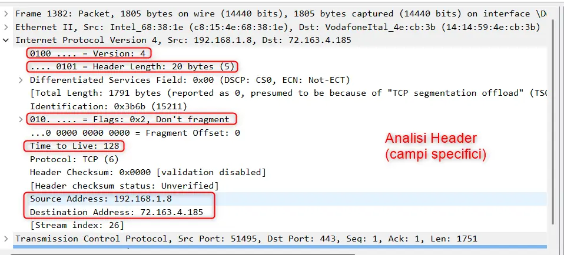

Il Protocollo IPv4:
Struttura del Datagramma e Header
Versione, IHL, ToS, TTL, checksum, indirizzi: ogni campo dell'header IPv4 spiegato a fondo, con un diagramma interattivo a 32 bit e un caso reale catturato con Wireshark.
Dove si colloca IPv4
Il modello TCP/IP e il concetto di PDU
Ogni comunicazione in rete passa attraverso più livelli, ciascuno con un compito preciso. Il modello TCP/IP ne definisce quattro: Applicazione (i programmi che usiamo, es. browser, client email), Trasporto (consegna affidabile o veloce dei dati, TCP/UDP), Internet (instradamento tra reti diverse) e Accesso alla rete (trasmissione fisica sul cavo o sul Wi-Fi).
A ogni livello, l'unità di dati scambiata ha un nome diverso — si parla di PDU, Protocol Data Unit: segmento a livello Trasporto, datagramma a livello Internet, frame a livello di accesso alla rete.
Cos'è IPv4 e il datagramma
Origini, indirizzamento, struttura in due parti
Internet Protocol versione 4 nasce nel 1983 come protocollo di rete per ARPANET, l'antenato militare/accademico di Internet. Da allora è diventato il fondamento su cui è cresciuta tutta la rete globale.
Ogni dispositivo connesso riceve un indirizzo IP a 32 bit, scritto in notazione decimale puntata per renderlo leggibile — ad esempio 192.168.1.1. Con 32 bit disponibili si ottengono circa 4,3 miliardi di combinazioni possibili: un numero enorme nel 1983, oggi insufficiente per miliardi di smartphone, sensori IoT e dispositivi connessi (ne parliamo nella Sezione 8).
Il datagramma — l'unità di trasmissione di IPv4 — è composto da due parti distinte:
L'header è la "busta" del datagramma: contiene tutte le informazioni che servono ai router per instradarlo correttamente, senza che nessuno debba aprire il payload (il contenuto vero e proprio). È esattamente l'header — campo per campo — il cuore di questa guida.
Struttura generale del datagramma
Dimensione variabile: 20-60 byte di header
L'header IPv4 non ha una dimensione fissa. Il suo minimo è 20 byte — cioè 5 "parole" da 32 bit ciascuna — quando non sono presenti campi opzionali. Può arrivare fino a un massimo di 60 byte quando vengono aggiunte opzioni (usate raramente nel traffico Internet moderno, più comuni in contesti di rete specifici come diagnostica o sicurezza).
Il payload, invece, trasporta i dati del livello superiore — tipicamente un segmento TCP o UDP — e la sua dimensione varia in base a cosa deve essere trasmesso.
Campi dell'header — parte 1
Versione, IHL, ToS, Lunghezza totale — clicca un campo per i dettagli
Da qui in avanti l'header viene esplorato campo per campo, riga per riga (ogni riga = 32 bit). Il diagramma sotto è interattivo e resta uguale per tutta la guida: clicca o tocca un campo qualsiasi — anche di sezioni successive — per leggerne la spiegazione nel pannello sotto.
👆 Clicca un campo del diagramma per leggere qui la sua spiegazione.
Le 5 righe da 32 bit qui sopra formano i 20 byte dell'header minimo (senza opzioni) — vedi Sezione 3.
Versione (4 bit)
Indica la versione del protocollo IP utilizzata. Per IPv4 questo valore è sempre 4 — è il primo campo che ogni router legge per sapere come interpretare tutto il resto dell'header.
IHL — Internet Header Length (4 bit)
Specifica la lunghezza dell'header in unità da 32 bit (parole). Il valore minimo è 5, che corrisponde a 5 × 32 bit = 20 byte, cioè l'header senza opzioni. Se sono presenti opzioni, IHL sale di conseguenza.
ToS — Type of Service (8 bit)
Definisce la priorità e la qualità del servizio (QoS) richiesta per il datagramma. Serve, ad esempio, a dare precedenza al traffico voce o video in tempo reale rispetto a una semplice email, che può tollerare ritardi maggiori senza conseguenze percepibili.
Lunghezza totale (16 bit)
Indica la dimensione totale del datagramma — header più dati — espressa in byte. Con 16 bit disponibili, il valore massimo rappresentabile è 65.535 byte: è il limite teorico di dimensione di un singolo datagramma IPv4.
Campi dell'header — parte 2
Identificazione, Flags, Fragment Offset, TTL
Questo gruppo di campi gestisce un problema concreto: non tutte le reti che un datagramma attraversa accettano pacchetti della stessa dimensione massima (MTU, Maximum Transmission Unit). Quando un datagramma è troppo grande per la rete successiva, va frammentato — diviso in pezzi più piccoli che il destinatario dovrà poi riassemblare.
Identificazione (16 bit)
Un numero univoco assegnato a ogni datagramma dal mittente. Se il datagramma viene frammentato lungo il percorso, tutti i frammenti mantengono lo stesso numero di Identificazione: è così che il destinatario sa quali pezzi appartengono allo stesso datagramma originale, per riassemblarli correttamente.
Flags (3 bit)
Tre bit che controllano la frammentazione. I due rilevanti sono DF (Do Not Fragment: il datagramma non deve essere frammentato — se non passa, viene scartato e il mittente avvisato) e MF (More Fragments: indica se esistono altri frammenti dopo questo, oppure se è l'ultimo pezzo).
Fragment Offset (13 bit)
Indica la posizione di questo frammento all'interno del datagramma originale, espressa in unità di 8 byte. È il "numero di pagina" che permette al destinatario di rimettere i frammenti nell'ordine giusto, anche se arrivano in disordine.
TTL — Time To Live (8 bit)
Un contatore che parte da un valore impostato dal mittente e viene decrementato di 1 a ogni hop (ogni router attraversato). Quando arriva a 0, il datagramma viene scartato. Serve a evitare che un pacchetto, per un errore di instradamento, circoli all'infinito in un loop tra router — senza TTL, una rete con un loop di routing si intaserebbe rapidamente di pacchetti "fantasma" che non arriveranno mai a destinazione.
traceroute/tracert: inviando pacchetti con TTL crescente (1, 2, 3…) si forza ogni router del percorso a scartarli e a rispondere con un messaggio di errore, rivelando così l'intero percorso fino a destinazione.Campi dell'header — parte 3
Protocollo, Checksum, Indirizzo sorgente e destinazione
Protocollo (8 bit)
Indica quale protocollo di livello superiore è contenuto nel payload del datagramma, così il destinatario sa a chi "consegnare" i dati una volta tolto l'header. I valori più comuni: TCP = 6, UDP = 17, ICMP = 1 (il protocollo usato, tra l'altro, dal comando ping).
Checksum header (16 bit)
Un valore di controllo calcolato sul solo header (non sui dati del payload) per verificarne l'integrità. Va ricalcolato a ogni hop, perché il campo TTL cambia a ogni passaggio attraverso un router — e quindi anche il checksum, che dipende da tutto il contenuto dell'header, deve essere aggiornato di conseguenza.
Indirizzo IP sorgente (32 bit)
L'indirizzo IP del dispositivo che ha generato il datagramma — il mittente.
Indirizzo IP destinazione (32 bit)
L'indirizzo IP del dispositivo a cui il datagramma è destinato — il destinatario finale. Sono questi due campi, insieme, che ogni router usa per decidere su quale interfaccia di rete instradare il pacchetto.

Funzioni chiave dei campi
Perché contano davvero, in sintesi
Dopo aver visto ogni campo singolarmente, è utile rivedere a cosa serve ciascun gruppo nel funzionamento reale della rete:
| Gruppo di campi | Funzione chiave |
|---|---|
| Versione + IHL | Permettono a ogni router l'interpretazione corretta della struttura del pacchetto, prima ancora di leggerne il contenuto. |
| ToS / DSCP | Gestisce la priorità del traffico — fondamentale per servizi sensibili al ritardo come VoIP e streaming in diretta. |
| Identificazione, Flags, Fragment Offset | Permettono la trasmissione su reti con MTU diverse, suddividendo e poi riassemblando correttamente i dati. |
| TTL | Previene la congestione della rete eliminando pacchetti intrappolati in loop di instradamento (deve essere >1: un TTL a 0 non sopravvive nemmeno al primo hop). |
| Protocollo | Instrada i dati al livello corretto a destinazione: TCP, UDP o ICMP, secondo il servizio richiesto. |
Limiti di IPv4 ed evoluzione a IPv6
Perché esiste un protocollo "successivo"
IPv4 sostiene la rete globale da oltre 40 anni, ma la sua architettura — pensata negli anni '80 — mostra limiti diventati via via più evidenti con la crescita di Internet. Il modo più diretto per capirlo è confrontare l'header campo per campo con quello del suo successore:
Nota: gli indirizzi sorgente/destinazione sono disegnati più "alti" nello schema IPv6 solo per rendere visivamente la differenza di dimensione — 128 bit contro 32 bit, non sono in scala bit-per-bit con le altre righe.
- Indirizzi a 128 bit: spazio di indirizzamento praticamente illimitato.
- Header semplificato e di dimensione fissa (40 byte): elaborazione più rapida da parte dei router.
- Coesistenza con IPv4 durante la lunga fase di transizione globale, ancora in corso.
- Esaurimento degli indirizzi: ~4,3 miliardi di combinazioni, insufficienti per i miliardi di dispositivi IoT connessi oggi.
- Header complesso: campi opzionali e frammentazione rallentano l'elaborazione da parte dei router moderni.